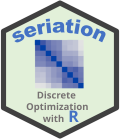

Register Seriation Methods from Package vegan
Source:R/seriate_vegan.R
register_vegan.RdRegister the "isomap", "monoMDS", and "metaMDS" seriation methods
for dissimilarity matrices. These methods use the corresponding functions
from package vegan.
Examples
if (FALSE) { # \dontrun{
register_vegan()
list_seriation_methods("dist")
} # }